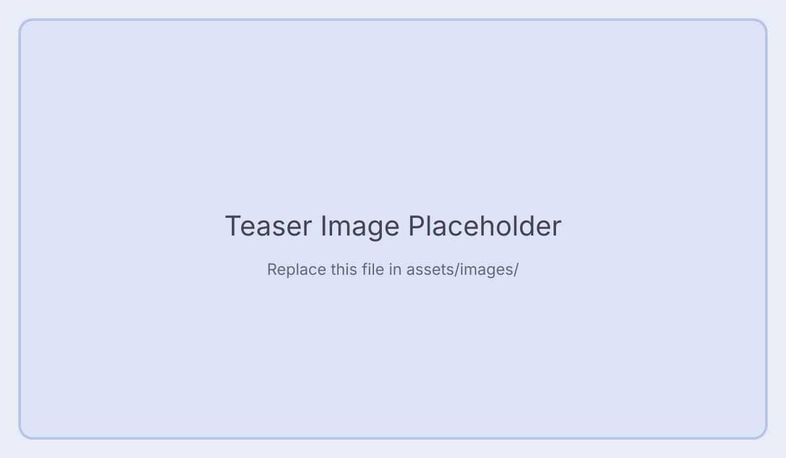
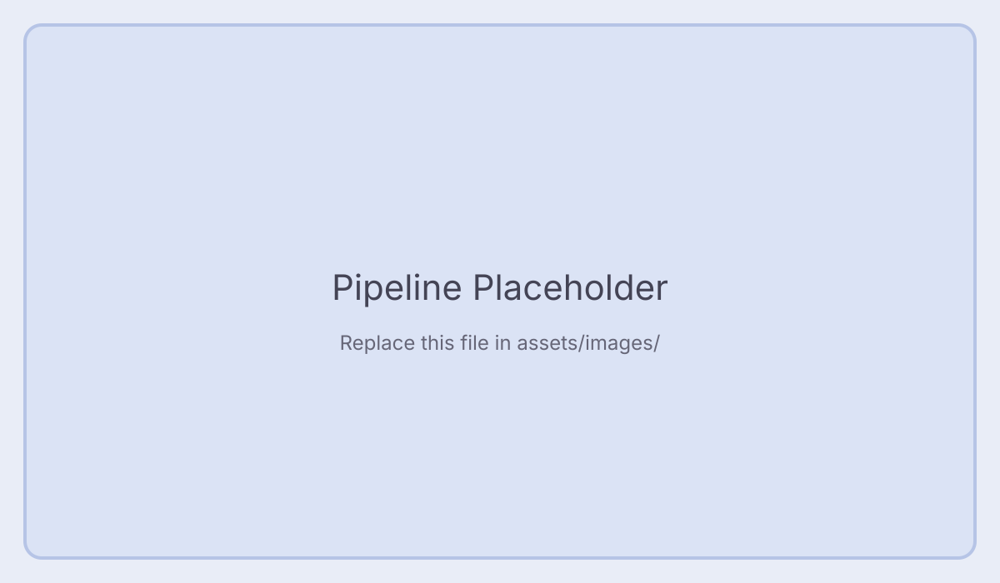
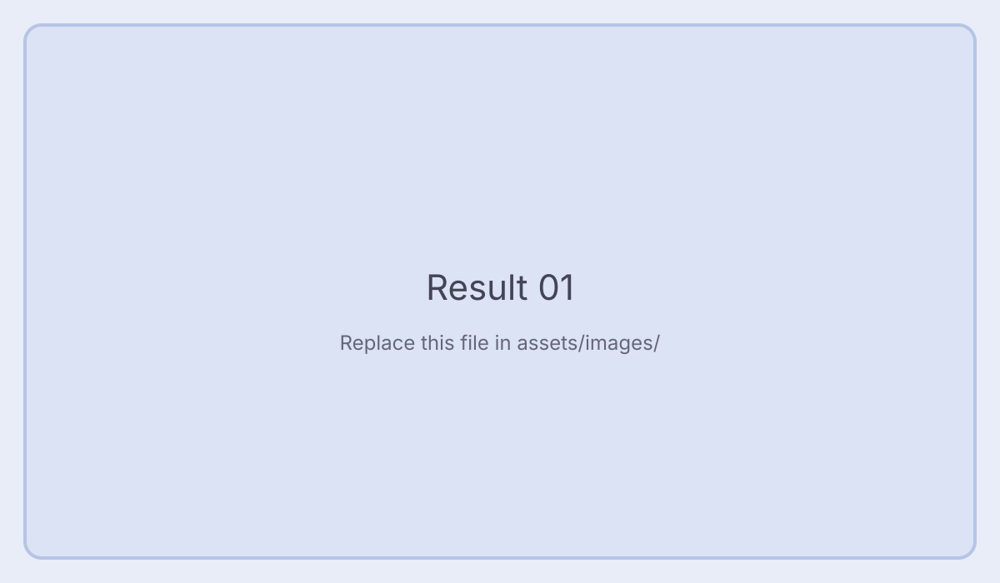
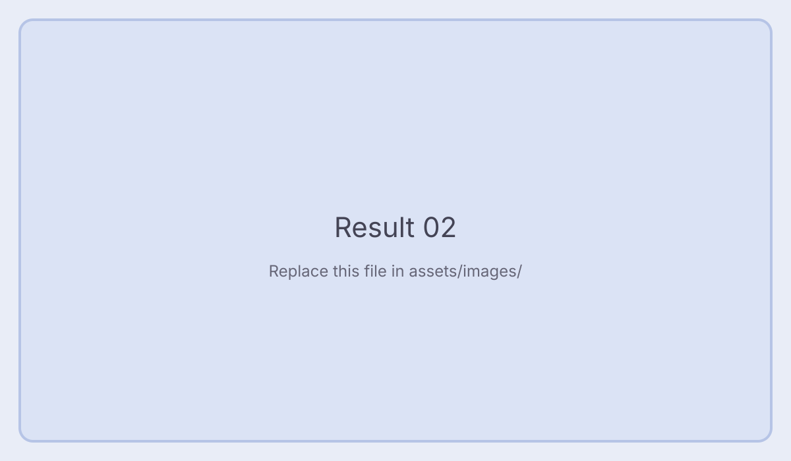
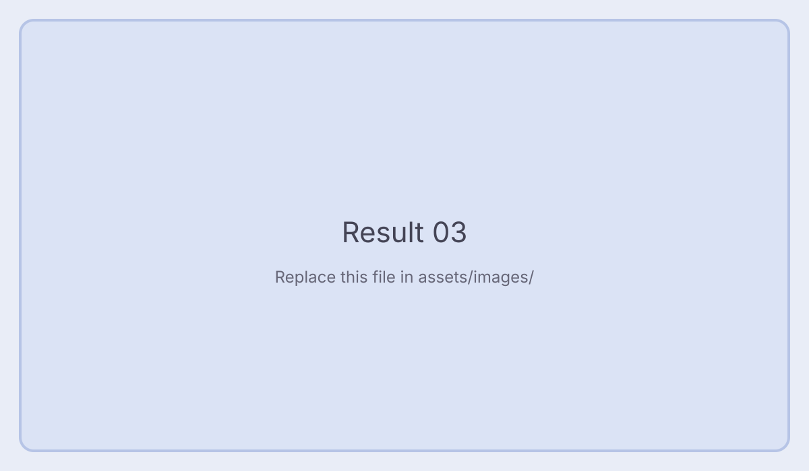

1) Clone + Setup
# Clone repository
git clone https://github.com/yourname/yourproject.git
cd yourproject
# Create environment
conda create -n yourproject python=3.10 -y
conda activate yourproject
pip install -r requirements.txtCVPR 2026 (Placeholder)
Replace this with a one-paragraph project summary. Keep it clear, specific, and easy to scan like HairCLIP/VitaGlyph pages.
Tip: Update title/subtitle/buttons first.

assets/images/teaser-placeholder.svg

assets/images/pipeline-placeholder.svg
Write a short explanation for your architecture/training strategy. Keep this section concise and use bullets for readability.
Replace the placeholders with your generated examples.



You can paste your quick demo scripts below. Visitors can copy with one click.
# Clone repository
git clone https://github.com/yourname/yourproject.git
cd yourproject
# Create environment
conda create -n yourproject python=3.10 -y
conda activate yourproject
pip install -r requirements.txtpython quick_test.py \
--input assets/examples/input.jpg \
--prompt "A colorful hand-drawn logo in cyberpunk style" \
--output outputs/demo_result.jpg@article{yourproject2026,
title = {YourProject: Replace with Full Title},
author = {First Author and Second Author and ...},
journal = {arXiv preprint arXiv:xxxx.xxxxx},
year = {2026}
}